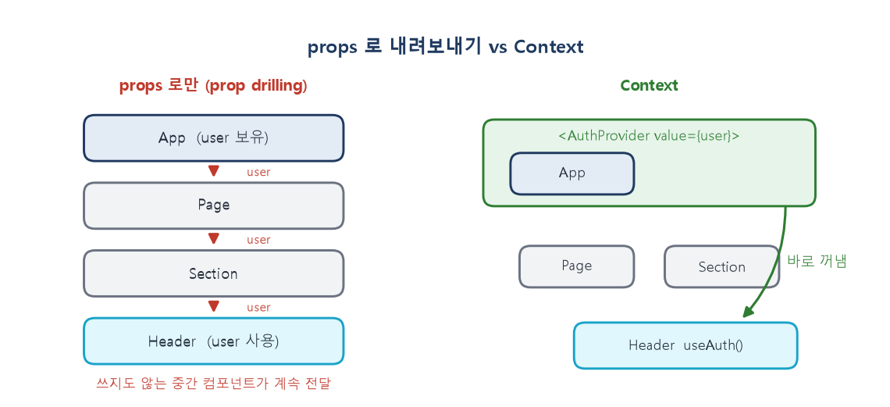
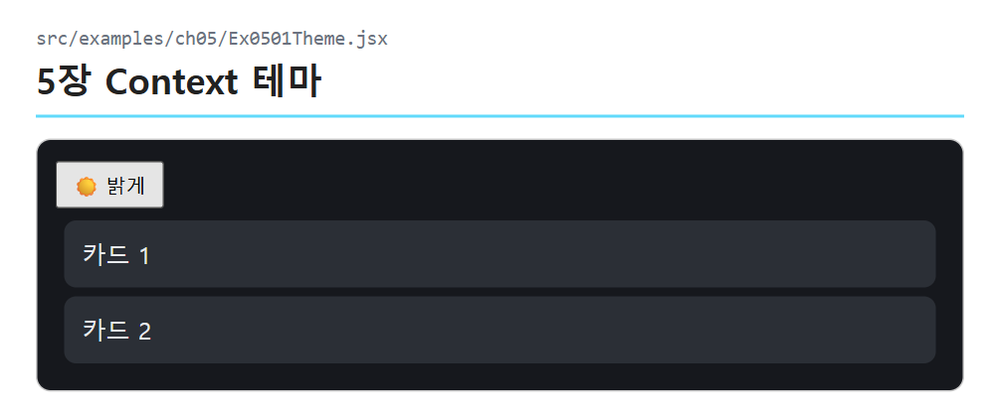
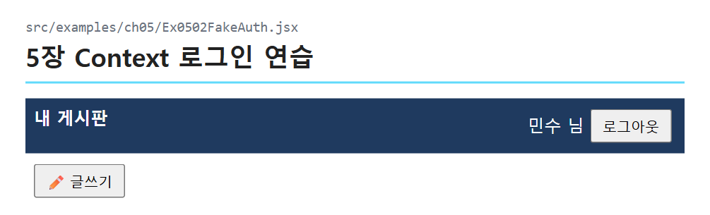

5장. Context API
학습 목표
- prop drilling 이 무엇이고 왜 불편한지 안다.
createContext→ Provider →useContext세 단계로 값을 나눠 쓴다.- Context 를 쓰기 편하게 커스텀 훅(
useTheme,useAuth)으로 감싼다. - 로그인 상태를 Context 로 관리하는 모양을 미리 익힌다 (9장 준비).
5-1. prop drilling
로그인한 사용자 정보는 머리글, 글쓰기 버튼, 글 읽기 화면… 여러 곳에서 필요하다. props 로만 전달하면 쓰지도 않는 중간 컴포넌트들이 값을 받아서 아래로 넘기기만 해야 한다. 이것을 prop drilling(드릴로 뚫듯 내려보내기)이라 한다.

Context 는 값을 Provider 에 한 번 올려 두면, 그 안쪽의 어느 깊이의 컴포넌트든 바로 꺼내 쓰게 해 준다.
5-2. Context 만들기 3단계
📄 advanced/examples/src/context/ThemeContext.jsxGitHub 에서 보기
// ThemeContext.jsx - Context ① : 앱 전체가 함께 쓰는 "밝은/어두운 테마"
//
// 이 파일이 보여 주는 것 (Context 를 만드는 3단계)
// 1. createContext() : 값을 실어 나를 "통로" 를 만든다
// 2. <ThemeContext value> : Provider. 이 태그 안쪽의 모든 컴포넌트가 값을 받을 수 있다
// (React 19 부터는 <ThemeContext.Provider> 대신 <ThemeContext> 로 바로 쓴다)
// 3. useContext() : 받는 쪽. props 로 여러 단계를 내려보내지 않아도 바로 꺼낸다
// - 받는 쪽이 쓰기 편하게 useTheme() 라는 커스텀 훅으로 감싸 둔다.
import { createContext, useContext, useState } from "react";
const ThemeContext = createContext(null); // 1. 통로 만들기
// 2. 값을 공급하는 컴포넌트
export function ThemeProvider({ children }) {
const [dark, setDark] = useState(false);
const toggle = () => setDark((d) => !d);
// 내려보낼 값: 지금 테마 + 바꾸는 함수
return <ThemeContext value={{ dark, toggle }}>{children}</ThemeContext>;
}
// 3. 받는 쪽이 쓸 훅
export function useTheme() {
const value = useContext(ThemeContext);
if (value === null) {
// Provider 바깥에서 쓰면 값이 없다 → 실수를 바로 알려 준다
throw new Error("useTheme 은 <ThemeProvider> 안에서만 쓸 수 있습니다");
}
return value;
}
| 단계 | 코드 | 하는 일 |
|---|---|---|
| ① 통로 | const ThemeContext = createContext(null) |
값을 실어 나를 통로 |
| ② 공급 | <ThemeContext value={...}>{children}</ThemeContext> |
안쪽 전체에 값 공급 |
| ③ 사용 | useContext(ThemeContext) |
가장 가까운 Provider 의 값을 꺼냄 |
React 18 까지는 공급할 때
<ThemeContext.Provider value={...}>라고 썼다. React 19 부터는<ThemeContext value={...}>로 바로 쓸 수 있다. 인터넷 자료에서.Provider를 보면 같은 뜻으로 읽으면 된다.
5-3. 테마 바꾸기 예제
📄 advanced/examples/src/examples/ch05/Ex0501Theme.jsxGitHub 에서 보기
// Ex0501Theme.jsx - Context 로 테마 나눠 쓰기
//
// 이 예제가 보여 주는 것
// - Page → Section → Card 처럼 깊이 들어간 컴포넌트도 useTheme() 한 줄로 테마를 꺼낸다.
// - 중간의 Section 은 테마를 쓰지 않으므로 props 로 받지도 넘기지도 않는다.
// (props 로만 했다면 Section 이 쓰지도 않는 dark 를 받아서 Card 에 넘겨야 한다 = prop drilling)
import { ThemeProvider, useTheme } from "../../context/ThemeContext";
function ThemeButton() {
const { dark, toggle } = useTheme();
return <button onClick={toggle}>{dark ? "☀️ 밝게" : "🌙 어둡게"}</button>;
}
function Card({ title }) {
const { dark } = useTheme(); // 깊은 곳에서 바로 꺼낸다
const style = {
padding: 12,
margin: 6,
borderRadius: 8,
background: dark ? "#2b2f36" : "#f4f7fb",
color: dark ? "#e8eaed" : "#222",
};
return <div style={style}>{title}</div>;
}
// 테마를 모르는 중간 컴포넌트
function Section() {
return (
<div>
<Card title="카드 1" />
<Card title="카드 2" />
</div>
);
}
function Page() {
const { dark } = useTheme();
return (
<div style={{ padding: 12, borderRadius: 10, background: dark ? "#16181d" : "white", border: "1px solid #ccc" }}>
<ThemeButton />
<Section />
</div>
);
}
function Ex0501Theme() {
// Provider 로 감싼 안쪽에서만 useTheme 을 쓸 수 있다
return (
<ThemeProvider>
<Page />
</ThemeProvider>
);
}
export default Ex0501Theme;

Section 은 테마를 모르는데도 그 안의 Card 는 테마를 받는다. Provider 의 값이 바뀌면 그 값을 쓰는 컴포넌트들이 다시 그려진다.
5-4. 로그인 상태를 Context 로 (9장 미리 보기)
서버 없이 닉네임만으로 "로그인" 하는 연습판이다. 9장의 AuthContext.jsx 가 이 모양과 같다.
📄 advanced/examples/src/context/FakeAuthContext.jsxGitHub 에서 보기
// FakeAuthContext.jsx - Context ② : 로그인 상태를 앱 전체에 알리기 (서버 없는 연습판)
//
// 이 파일이 보여 주는 것
// - "지금 로그인한 사용자" 는 머리글, 글쓰기 버튼, 내 정보 화면 등 여러 곳에서 필요하다
// → Context 에 두기 딱 좋은 값이다.
// - Provider 가 user state 와 login / logout 함수를 함께 내려준다.
// - 심화 9장의 AuthContext.jsx 는 이 파일과 모양이 같고,
// login 안에서 진짜 Spring Boot 서버에 요청하는 것만 다르다.
import { createContext, useContext, useState } from "react";
const AuthContext = createContext(null);
export function FakeAuthProvider({ children }) {
const [user, setUser] = useState(null); // null = 로그인 안 함
const login = (nickname) => setUser({ nickname }); // 진짜 앱에서는 서버에 아이디·비밀번호를 보낸다
const logout = () => setUser(null);
return <AuthContext value={{ user, login, logout }}>{children}</AuthContext>;
}
export function useFakeAuth() {
const value = useContext(AuthContext);
if (value === null) throw new Error("useFakeAuth 는 <FakeAuthProvider> 안에서만 쓸 수 있습니다");
return value;
}
📄 advanced/examples/src/examples/ch05/Ex0502FakeAuth.jsxGitHub 에서 보기
// Ex0502FakeAuth.jsx - 로그인 상태를 Context 로 나눠 쓰기 (9장 미리 보기)
//
// 이 예제가 보여 주는 것
// - Header, WriteButton, LoginBox 가 서로 props 를 주고받지 않는데도
// 같은 로그인 상태를 보고 함께 바뀐다.
// - 로그인 여부에 따라 버튼을 보여 주거나 숨기는 조건부 렌더링 (기초 5장)
import { useState } from "react";
import { FakeAuthProvider, useFakeAuth } from "../../context/FakeAuthContext";
// 머리글: 로그인했으면 닉네임과 로그아웃 단추
function Header() {
const { user, logout } = useFakeAuth(); // props 없이 Context 에서 바로 꺼낸다
return (
<div style={{ display: "flex", justifyContent: "space-between", padding: 8, background: "#1f3a5f", color: "white" }}>
<strong>내 게시판</strong>
{user ? (
<span>
{user.nickname} 님 <button onClick={logout}>로그아웃</button>
</span>
) : (
<span>로그인하지 않음</span>
)}
</div>
);
}
// 글쓰기 단추: 로그인 전에는 안내 문구로 바뀐다
function WriteButton() {
const { user } = useFakeAuth(); // Header 와 같은 user 를 본다
if (!user) return <p>🔒 글을 쓰려면 로그인하세요.</p>; // 로그인 전이면 여기서 끝 (조건부 렌더링)
return <button>✏️ 글쓰기</button>;
}
// 로그인 상자: 닉네임을 넣고 로그인하면 login() 이 Context 의 user 를 바꾼다
// → Header, WriteButton 이 props 를 받지 않았는데도 함께 다시 그려진다
function LoginBox() {
const { user, login } = useFakeAuth();
const [name, setName] = useState(""); // 입력 칸의 글자 (이 상자 안에서만 쓰는 state)
if (user) return null; // 로그인했으면 이 상자는 숨긴다 (null 을 돌려주면 아무것도 안 그림)
return (
<form
onSubmit={(e) => {
e.preventDefault(); // 페이지 새로 고침 막기
if (name.trim()) login(name.trim()); // 앞뒤 빈칸을 뺀 닉네임으로 로그인
}}
>
<input value={name} onChange={(e) => setName(e.target.value)} placeholder="닉네임" />
<button type="submit">로그인</button>
</form>
);
}
function Ex0502FakeAuth() {
return (
// Provider 로 감싼 안쪽 컴포넌트는 모두 같은 로그인 상태를 나눠 쓴다
<FakeAuthProvider>
<Header />
<div style={{ padding: 8 }}>
<LoginBox />
<WriteButton />
</div>
</FakeAuthProvider>
);
}
export default Ex0502FakeAuth;

Header, LoginBox, WriteButton 은 서로 props 를 주고받지 않는다. 그런데 LoginBox 에서 로그인하면 셋이 동시에 바뀐다. 모두 같은 Provider 의 user 를 보고 있기 때문이다.
5-5. Context 를 쓸 때 주의할 점
- 아무 값이나 Context 에 넣지 않는다. 정말 여러 곳에서 쓰는 값(로그인 사용자, 테마, 언어)만. 몇 단계 내려보내는 정도는 props 가 더 읽기 쉽다.
- Provider 의 값이 바뀌면 그 Context 를 쓰는 모든 컴포넌트가 다시 그려진다. 자주 바뀌는 값(입력 중인 글자 등)은 넣지 않는다.
- 꺼내 쓰는 훅(
useTheme)에서 Provider 밖이면 오류를 던지게 해 두면, Provider 로 감싸는 것을 잊었을 때 바로 알 수 있다.
정리
- prop drilling: 쓰지 않는 중간 컴포넌트가 값을 계속 전달하는 불편함.
createContext→<Ctx value={값}>로 감싸기 →useContext(Ctx)로 꺼내기.- 쓰는 쪽을 위해
useXxx()커스텀 훅으로 감싸 두자. - 로그인 사용자 = Context 에 두기 가장 알맞은 값.
확인 문제
- Context 를 만들고 쓰는 세 단계를 코드 한 줄씩으로 쓰시오.
- Ex0501Theme 에서
<ThemeProvider>감싸기를 지우면 어떤 일이 생기는가? 그 오류 문구는 어디서 나오는가? LanguageContext를 만들어 "한국어 / English" 버튼으로 바꾸고, 깊은 곳의Greeting컴포넌트가안녕하세요또는Hello를 보여 주게 하시오.- FakeAuthContext 에 로그인한 시각(
loginAt)을 함께 저장하고, Header 에민수 님 (10:30 로그인)처럼 보여 주시오.